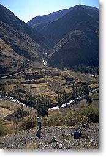

|
|
|  The point of this web site is to introduce you to the site of Chavín de Huántar through virtual reality and a variety of photographs integrated within that experience, and help you ponder some of the big questions that archaeologists face with such data. Chavín de Huántar is located in Peru, 250 km to the north of Lima, and has long been a site of public interest and archaeological inquiry.
To explore the site of Chavín de Huántar we have assembled this site in a particular order that we think will make sense to the user. You probably will want to read the 'Home' introduction to understand the site's cultural background, and follow on to the Setting section to get a sense of the environmental context of the site. Then you are ready to visit the site itself. You will find this organized into Old Temple and New Temple sections, so that you can first explore the earlier architecture of the site, and then move on to the later constructions. These two sections are mostly panoramas, which are linked to allow you to navigate around and within the site. The Project section will give you a word or two about the work that my team is conducting at the site that has led to the creation of this web site. Finally, you will have the chance to comment on questions I raise about the relationship between architecture and the nature of Chavín society. When you revisit the site, feel free to jump to any section, as appropriate. You will need the RealSpace plug-in to view the panoramas - Click here for download and navigation instructions.
|
|||||||||||||||||||